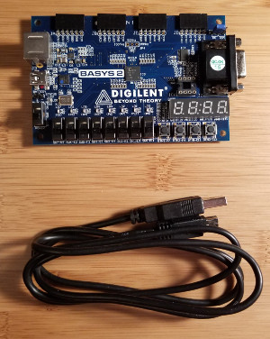
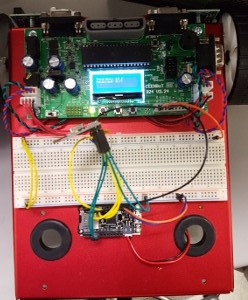
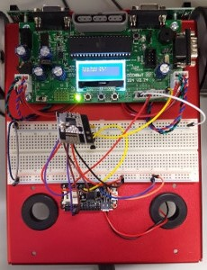
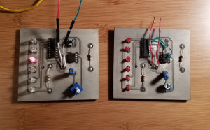
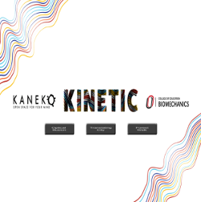
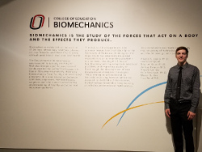
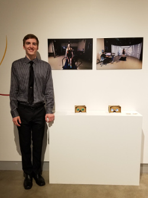
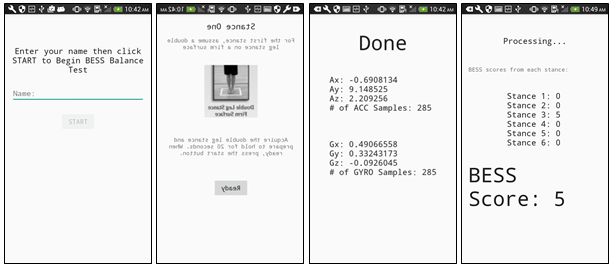

8051 based system
The ECE program at UNO is infamous for its lab work and hands on experience. This project is one that defines the program. For this assignment, I designed an 8051 based microcontroller system, which includes external RAM and ROM, an LCD, keypad for input, 7-segment display, a temperature sensor and ADC, and an RTC. At its completion, this project was the culmination of my coursework. We are now designing similar systems in higher level courses which implement serial communication into more complex designs.

Five stage pipeline CPU
For this project I designed a basic five-stage pipeline CPU, which handles a wide variety of MIPs instructions. This project was designed and implemented on a Spartan 3E FPGA development board. It taught the fundamentals and advanced functions needed to program a CPU, which completes a Fetch, Decode, Execute, Memory, and Write-back pipeline cycle in the Verilog programming language.
CEEN bot two way communication system
The objective for this project was to design a two-way communication system between two mobile CEEN bots. Each CEEN bot had its own temperature sensor. It displayed its own temperature and transmitted this data to the other for receival. For this system I chose to use two nRF24L01 transceiver modules by Nordic semiconductors. I interfaced the modules using the CEEN bot SPI protocol. The CEEN bots were made mobile by programming a loop to drive in a circle. They could then talk to each other using the nRF24L01 modules and display data on the CEEN bot LCD screen.


First PCB design
As a precursor to the course in which the 8051 based system was designed, I built a simple PCB using provided schematics from circuit digest. This project provided my first experience using OrCAD in design and manufacturing of PCBs. I chose a simple 555 timer "dice" circuit. When the button is pushed, the six LEDs on the side light up rapidly. When the button is released, the lights will halt on a single LED. It is called a dice circuit due to the LEDs transitioning faster than the human eye can see, therefore making it difficult to replicate the same result.
The above image shows the prototype (right) and finished product (left). Many mistakes were made in this project. I had difficulty soldering the components and damaged the traces. This led to remanufacturing the board. In the image you can also see improper resistor footprint sizes, a wonky potentiometer, poor power supply placement, and poor component placement. With all these mistakes however, came knowledge. Through the process I learned proper breadboard prototyping techniques, how to use OrCAD, how to manufacture a PCB, and proper component placement and soldering methods.
VR applications
During the Summer of 2017, Kaneko hosted a biomechanics exhibit for their Summer display, KINETIC. In this exhibit, the art of movement and perception of motion are explored. I developed a VR application in Unity which displays actual virtual reality video that biomechanics researchers use in their studies. VR is commonly used in Biomechanics studies; we have an entire lab dedicated to VR. This lab features a 180-degree screen in front of a treadmill. The videos challenge patients’ balance by altering their field of view with dynamic environments.
Unfortunately, this is not actual VR, but a close substitute. My app simply creates a video playing interface to play the videos used in research and converts these videos to actual VR. To do this, I utilized the Google VR SDK to convert the video to a texture that can be placed on the inside of a sphere. The video can then be watched in 360 as a VR video.



The image on the far left displays a screenshot of the home page of the app in Unity. The other two pictures show the exhibit at Kaneko.
AR applications
Working first hand with the Microsoft HoloLens is an amazing experience. The HoloLens is a piece of cutting edge technology not widely available to the public due to its cost. I have developed several AR games from basic Tic Tac Toe, to dynamic environments like the solar system, and am currently working on a flight simulator.


Mobile applications
I develop mobile applications for researchers to use and assist in the data collection for studies. I am currently working on developing a universal data collection app for the convenience of the Biomechanics researchers. This app will include components often needed in research studies: a stopwatch, surveys, connection via Bluetooth to devices, data storage, and sensory data collection.
I have developed many apps for the android platform, some of which meeting the criteria listed above. I aim to compress some of these repetitive apps into one. I have developed an app that strictly collects accelerometer and gyroscope data and saves the information to a text file. In another app, I utilize BLE to connect to an Arduino and collect sensor data wirelessly. I have made a similar application using classic Bluetooth. Finally, I have developed a concept design to collect patient surveys and store data in a text file, with other wireless components. All the apps I have developed have taught me the key components of saving data to external storage, wireless communication through both forms of Bluetooth, and accessing mobile phone sensors. I have successfully accomplished these concepts using both Android Studio and Unity. Application development is a strong passion of mine and I seek to constantly improve my skills, and learn new techniques and concepts with each app I make.

The first image displays a skeleton app that is still underway. This app will administer a survey and store patient information.
Research Projects
My mentor at Biomechanics studies assistive devices and often needs instrumentation to collect patient data. I use Arduino, raspberry pi, and other open source electronics to design the instrumentation for these assistive devices. After prototyping the device, I convert the system to a more organized and reliable PCB. Many of these devices are made useful for biomechanics studies by adding load cells, IMUs, and many other sensors. I also develop accompanying mobile apps for many devices. These apps often communicate wirelessly with the boards through BLE. Many of the devices used in research are specifically made to suit the unique needs of each researcher. These devices are then validated in research and have potential for patents. Pictures cannot be displayed for this reason.
FUSE study
In Spring 2017, I was awarded a Funds for Undergraduate Scholarly Experiences (FUSE) grant to complete my research. I am currently studying the usefulness and practicality of using smart phones in a clinical setting. For my study, I developed an android application, which walks the patient through a balance test by utilizing the phones built-in accelerometer and gyroscope. The balance data is then recorded and saved on the phone’s internal storage and analyzed using MATLAB.
Poster Presentations
I have presented my research findings at two fairs and one conference: The Biomechanics Symposium, The Student Research and Creative Activity Fair, and the UNO’s Human Movement Variability Conference.

Smart Mirror
I am currently working on developing a smart mirror. I developed an interest in smart mirrors after seeing them featured as a good raspberry pi project. I am taking on this project as an opportunity to learn and improve my skills in python, the raspberry pi platform, and Linux operating systems. I am using the PyQt library as my GUI and no open source code. This project is still currently underway. Progress pictures and final product will be posted as well.


The screen I am using is an old recycled laptop screen. I no longer needed my laptop so I took it apart for some useful components. I found that replacement laptop screens provide the best low cost solution when it comes to LCD modules. A 10" screen on digikey can cost $300 dollars. My 15" used laptop screen was free. However, the same model can be bought brand new for $50. All that is needed is an HDMI to LVDS adapter and driver board.
Web Design
Last but not least, I have dabbled in web design. This website is one of my creations. I enjoy trying and learning new things. I always challenge myself with projects outside of my area of expertise. I found the experience of designing this website from scratch to be very enjoyable and satisfying. I plan to seek out more opportunities that allow me to make another websites.